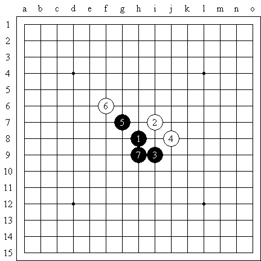
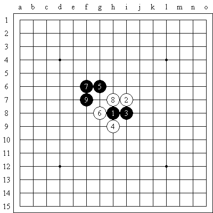
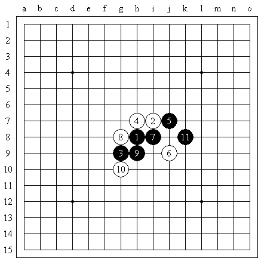

一子双防
#1 一子双防 作者：逆刃 发表时间：2008-5-26 14:30:48
一手棋同时防守白棋斜线的两个进攻点通常是五子棋中的好棋。 举一些例子来说明一下。

1. 黑7是好棋，不用去直接防守白棋，但能够化解白棋的攻击于无形。
同下图。

黑9之后能够阻挡白棋6和8的进攻。

黑棋11也是好棋。对于白棋4和8，黑棋没有去防守，而是用11做了一手，间接的控制白棋，如果白棋活三，那么黑棋就反击。
#2 Re:一子双防 作者：风炎 发表时间：2008-5-26 15:13:06
 看 了 题 目 本 来 以 为 是 如 何 防 守 一 子 双 杀 的 呢，看 来 猜 错 了。。
看 了 题 目 本 来 以 为 是 如 何 防 守 一 子 双 杀 的 呢，看 来 猜 错 了。。
#3 Re:一子双防 作者：百医天使 发表时间：2008-5-27 0:19:34
这个专题就比上一个，简单得多了，不过也还不错，要是没看过这几个定的人，还是有帮助的，#4 Re:一子双防 作者：爱在晴天 发表时间：2008-6-16 19:26:28
好棋～
#5 Re:一子双防 作者：翌者 发表时间：2008-6-16 20:19:28
解释的很清楚啊！好贴
#6 Re:一子双防 作者：远山的呼唤 发表时间：2008-7-28 0:52:43
可能是我刚学吧,看的不是十分懂,好像有些道理#7 Re:一子双防 作者：晏如庐 发表时间：2008-8-1 10:15:58
很好,就是内容太少.#8 Re:一子双防 作者：秋听风冬看雪 发表时间：2008-12-11 18:45:21
这些内容正是我们新手需要掌握的，谢谢了#9 Re:一子双防 作者：草莓 发表时间：2008-12-27 16:05:54
学习中。谢谢。#10 Re:一子双防 作者：来客沙丝 发表时间：2009-3-11 20:36:31
道理讲地很明白，但例子太少，好像还没看够的感觉，不过瘾，不过瘾！！
#11 Re:一子双防 作者：冰灵雪光 发表时间：2009-3-12 20:30:45
不错啊~
就是有点短，还有这个新手区教学帖子怎么那么少啊。。。。
#12 Re:一子双防 作者：来客沙丝 发表时间：2009-3-12 21:06:45
楼上的，今天才来吧。不少啊，你点击“新手入门”，有4页主题帖子呢。够学一阵子了吧。 多多交流啊。
多多交流啊。